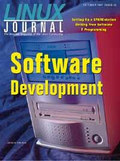

Shutdown Archive web server
Search:
Linux Journal
Issue #42/October 1997

Features
Literate Programming Using Noweb
by Andrew Johnson and Brad Johnson
An introduction to Noweb, a tool designed to aid the programmer in producing understandable and easy to maintain code.
Remote Procedure Calls in Linux
by Ed Petron
An introduction to this vital software development technique.
Xmotd: Writing Free Software
by Luis Fernandes
This message-of-the-day browser was written to ease the burden of the local system administrator.
Portability and Power with the F Programming Language
by Walt Brainerd, David Epstein and Dick Hendrickson
The authors combine over forty years of language-design committee experience to create the world's most portable, yet efficient, powerful, yet simple programming language.
News & Articles
Setting up a SPARCstation
by John Little
LJ
Interviews Thomas Roell
by Marjorie Richardson
PostScript: The Forgotten Art of Programming
by Hans DeVreught
Linux and the Alpha
by David Mosberger
Reviews
Product Review
SpellCaster DataCommute/BRI ISDN Adaptor
by Jay Painter
Book Review
Internet Programming with Python
by Dwight Johnson
Book Review
Unix Programming Tools
by Andrew L. Johnson
Book Review
Advanced Programming in the Unix Environment
by David Bausum
Book Review
Apache: The Definitive Guide
by Luca Cott Ramusino
WWWsmith
Linux as an Internet Kiosk
by Kevin McCormick
At the Forge
Integrating SQL with CGI, Part 1
by Reuven Lerner
Columns
Letters to the Editor
From the Publisher
Internet Changes/Linux Changes
by Phil Hughes
Stop the Presses
What Price High-Performance I/O?
by Phil Hughes
Linux Apprentice
DDD—The Data Display Debugger
by Shay Rojansky
Take Command
cat
by Patrick Hill
Linux Means Business
Grundig TV-Communications
by Ted Kenney
New Products
System Administration
Pgfs: The PostGres File System
by Brian Bartholomew
Kernel Korner
Kernel-Level Exception Handling
by Joerg Pommnitz
Linux Gazette
The Dotfile Generator
by Jesper K Pedersen
Best of Technical Support
Archive Index
Shutdown Archive web server
Search:
Copyright © 1994 - 2018
Linux Journal
. All rights reserved.